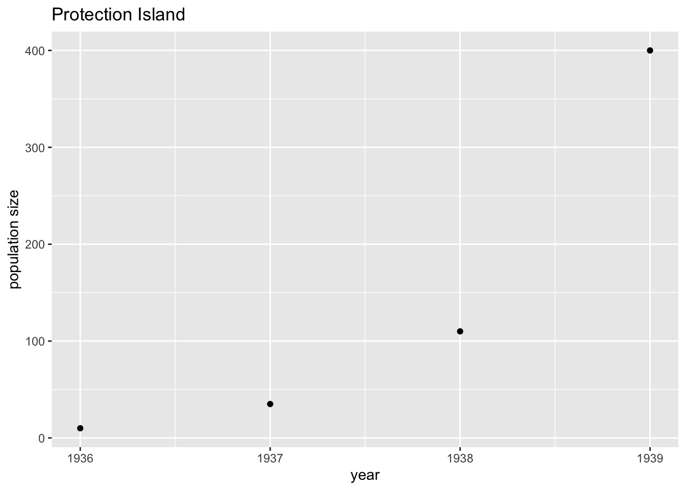

8 Jan 19: ASSIGNMENT Estimating the geometric growth rate
ASSIGNMENT 2 due Jan 26.
You are to write an Rmarkdown report that estimates the geometric growth rate, \(\lambda\), for the Protection Island pheasant population. Your report needs to consider two methods for estimating the geometric growth rate: fitting; and estimation from independent data.
The code you will need to complete this assignment is below. You may copy and paste this code into your Rmarkdown report. Sometimes you will need to change the values.
The requirements of the report follow the code.
8.1 Code
8.1.1 Loading and plotting the data
Load the data. I copied the data on to a website, so it can be loaded with the command below. Click here to view the code on the website.
data = read.csv("https://raw.githubusercontent.com/ahurford/biol-4605-data/main/data/protection-island.csv")Let’s plot the data. We select only columns 1 and 2 of the data because column 3 contains comments. We plot year on the horizontal (x-) axis and size on the (y-) vertical axis.
require(ggplot2)
protection.island <- data[,1:2]
g1 = ggplot(data = protection.island, aes(x = year, y = size)) +
geom_point() +
xlab("year")+
ylab("population size")+
ggtitle("Protection Island")
g1
8.1.2 Function for geometric growth
Below is the definition of a geometric growth function with time, \(t\), specifically defined for the number of years of Protection Island pheasant data, and the initial population size, \(N_0\), defined specifically for the Protection Island data. You need to give this function in your code before you call the function.
geo.pred <- function(lambda){
t = protection.island$year - protection.island$year[1]
N0 = protection.island$size[1]
size = N0*lambda^t
pred = data.frame(year = protection.island$year, size = size)
}The function is called by running geo.pred(lambda) in the console, where you enter a specific numerical value for lambda.
After you have run the code (i.e. in the Console) that defines the geo.pred(lambda) function (above), try lambda = 3 as:
result = geo.pred(3)
result## year size
## 1 1936 10
## 2 1937 30
## 3 1938 90
## 4 1939 270Remember, negative values of lambda are non-sensical. (For what values of lambda (or \(\lambda\)), does the population grow, again? Not sure? You can try some values in the geo.pred(lambda) function to figure this out by experimentation.)
Question 1 The geo.pred() function works by running the lines of code inside the geo.pred() function definition for the value of lambda that you supply (inside the parentheses in the function call). In the function definition, what are the lines of code that are pasted below doing? (Hint: What is the data frame protection.island? Note that data[1] selects the first value of a list of values and the $ selects a particular column of a data frame).
t = protection.island$year - protection.island$year[1]
N0 = protection.island$size[1]8.1.3 Fitting lambda
We have defined a function that will predict the population size of pheasants on Protection Island for different user supplied values of lambda. But what value of lambda is most likely given the data?
To answer this question we will use a statistical method known as maximum likelihood.
Our first step is to define a function that quantifies the fit of a given lambda value. This function assumes that deviations of the recorded data from the model-predicted values follow a Poisson distribution:
geofit <- function(lambda){
pred=geo.pred(lambda=lambda)
Ypred = pred$size
-sum(dpois(protection.island$size, Ypred, log=T))
}After running the geo.fit(lambda) function (in the Console), lets try to use the function and get some values of the negative log likelihood (i.e. the fit):
geofit(3)## [1] 41.64846geofit(1)## [1] 1280.129This result tells us that given the data, lambda = 3 is much more likely than lambda = 1 because the negative log likelihood value (41.65) is much smaller.
But what value of lambda is most likelihood given the data? Equivalently, for what value of lambda is the negative log likelihood minimized? To answer this question we need to call a function that will perform an optimization. This requires the mle2 function from the bbmle package, and you will need to install this package prior to using this function.
library(bbmle)## Loading required package: stats4fit.geo <- mle2(geofit, start=list(lambda=3))
summary(fit.geo)## Maximum likelihood estimation
##
## Call:
## mle2(minuslogl = geofit, start = list(lambda = 3))
##
## Coefficients:
## Estimate Std. Error z value Pr(z)
## lambda 3.408974 0.053472 63.752 < 2.2e-16 ***
## ---
## Signif. codes: 0 '***' 0.001 '**' 0.01 '*' 0.05 '.' 0.1 ' ' 1
##
## -2 log L: 24.32396confint(fit.geo)## 2.5 % 97.5 %
## 3.304256 3.513845The output above tells us that the maximum likelihood estimate of lambda is 3.41 and that the 95% confidence interval is [3.30, 3.51].
8.1.4 Plotting the fit
Finally, we would like to use our estimate values of lambda in the geometric growth function and compare the fitted values with the observed data.
In the code below, lambda = 3 is the estimated lambda value, and the 95% confidence interval is [2,4] (as example values). To use this code for your assignment you will need to substitute different values.
fit.predictions = geo.pred(3)$size
lower.fit = geo.pred(2)$size
upper.fit = geo.pred(4)$sizeWe had already made a plot of the data and we named our graph g1. We can now add some more layers to the graph as shown below. Note that the line is the value of fit.predictions as defined above (i.e., set =3 as an example), and the shaded ribbon spans from lower.fit to upper.fit (i.e., set to 2 and 4 as an example).
g2 = g1 +
geom_line(aes(y=fit.predictions)) +
geom_ribbon(aes(ymin = lower.fit, ymax = upper.fit), alpha = .2)(The value of alpha = 0.2 makes the ribbon transparent)
8.2 To hand in
Answer Question 1 which appears in bold in the Function for geometric growth section. [3 marks]
Write an Rmarkdown report that estimates \(\lambda\) (i.e.
lambda) in the geometric growth rate function using maximum likelihood fitting.
You must include a graph that shows:
The data (shown as dots);
The predicted values for the maximum likelihood estimate of
lambda(shown as a line);The predicted values for the 95% confidence interval for the estimate of
lambda(shown as a shaded region);
You must include a figure caption that explains the main point of your graph, and what the symbols are.
Your Rmarkdown file must contain a sequence of R commands that produces the graph. [10 marks]
- Estimate \(\lambda\) from data independent of the time series describing the population size of pheasants on Protection Island. This means that you cannot use more than one value of the population size to estimate one value of a quantity (you should be using the population size in a given year to calculate per capita rates by dividing only). You goal is to keep your parameter estimation method independent from the time series of pheasant population size so that you can validate the assumptions of your geometric growth model. In your Rmarkdown report you should:
Derive a formula for \(\lambda\) in terms of \(b\), the per capita birth rate, and the probability of mortality \(d\) each year. Do this based on the class discussion on January 17 or by reading Otto and Day, 2007 Section 2.5.1 Discrete-Time Models p47-50 and omit migration (i.e. \(m=0\)) for the application to the Protection Island pheasant population. [2 marks]
State some important assumptions of your \(\lambda\) formula. [3 marks]
Estimate \(b\) and \(d\) using some of the information given here. State assumptions that you have made when data is lacking or information is contradictory. Calculate \(\lambda\) given the formula you derived. [4 marks]
Use the
geo.pred(lambda)function to predict the population size of pheasants on Protection Island for your independently estimated \(\lambda\) value. The code to do this must be included in your Rmarkdown file. [2 marks]Make a plot of your predictions relative to the reported data. Include a figure caption that describes the main point of your figure and defines all the symbols. [3 marks]